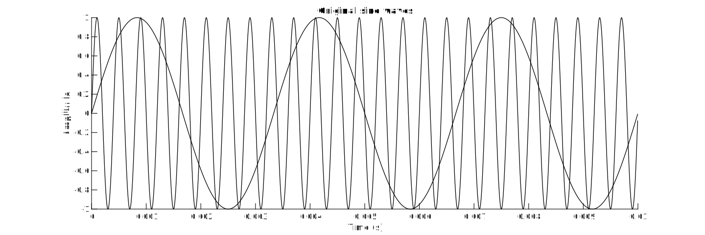
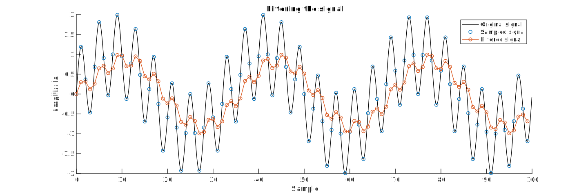

We can use MATLAB to visualize the effects of the filter.
%% Visualization
close all; % Close all open figures
alpha = 0.25; % Filter factor of 1/4
f_s = 10000; % 10 kHz sample frequency
f_1 = 300; % First sine wave with a frequency of 300 Hz
f_2 = 2500; % Second sine wave with a frequency of 2.5 kHz
samples = 100; % Calculate/plot 100 samples
n = linspace(0,samples-1,samples); % Generate a vector with sample numbers
t = n / f_s; % Generate a vector with time
sine_1 = sin(2*pi*f_1*t); % Calculate the (sampled) sine waves
sine_2 = sin(2*pi*f_2*t);
signal = (sine_1 + sine_2); % Mix the two sine waves together
b = alpha; % Coefficients of the numerator of the transfer function
a = [1,-(1-alpha)]; % Coefficients of the denominator of the transfer function
filtered = filter(b,a,signal); % Filter the signal
oversample_continuous = 20; % Create a version with ten times more samples
% to display the smooth, continuous signal
samples_continuous = oversample_continuous * samples;
n_continuous = linspace(0, samples_continuous-1,samples_continuous) / oversample_continuous;
t_continuous = n_continuous / f_s;
sine_1_continuous = sin(2*pi*f_1*t_continuous);
sine_2_continuous = sin(2*pi*f_2*t_continuous);
signal_continuous = (sine_1_continuous + sine_2_continuous);
% Plot the two original sine waves
figure('pos',[0,0,1200,400]);
hold on;
plot(t_continuous, sine_1_continuous, 'k');
plot(t_continuous, sine_2_continuous, 'k');
title('Original sine waves');
xlabel('Time (s)');
ylabel('Amplitude');
% Plot the continuous signal, the sampled version and the filtered output
figure('pos',[0,0,1200,400]);
hold on;
plot(n_continuous, signal_continuous, 'k');
plot(n, signal,'o');
plot(n, filtered,'-o');
title('Filtering the signal');
xlabel('Sample');
ylabel('Amplitude');
legend('Original signal','Sampled signal','Filtered signal');
% Apply a fast fourier transform and plot the spectra of the
% original signal and of the filtered output
figure('pos',[0,0,1000,400]);
hold on;
f = linspace(0,samples-1,samples)*f_s/samples;
original_spectrum = (abs(fft(signal))*2/samples).^2;
filtered_spectrum = (abs(fft(filtered))*2/samples).^2;
plot(f(1:1+samples/2),original_spectrum(1:1+samples/2),'-o');
plot(f(1:1+samples/2),filtered_spectrum(1:1+samples/2),'-o');
title('Power spectral density');
xlabel('Frequency (Hz)');
legend('Original signal','Filtered signal');
% Calculate the attenuation of the two sine waves
f_1_index = f_1*samples/f_s+1;
A_1 = filtered_spectrum(f_1_index) / original_spectrum(f_1_index);
A_1_dB = 10*log10(A_1);
fprintf('Attenuation of first sine wave (%.0f Hz) = %.02f dB\n', f_1, A_1_dB);
f_2_index = f_2*samples/f_s+1;
A_2 = filtered_spectrum(f_2_index) / original_spectrum(f_2_index);
A_2_dB = 10*log10(A_2);
fprintf('Attenuation of second sine wave (%.0f Hz) = %.02f dB\n', f_2, A_2_dB);
% Open the filter visualization tool
fvtool(b,a,'Fs',f_s);
%% WAV export
samples = f_s*2; % 2 seconds of audio
n = linspace(0,samples-1,samples); % Generate a vector with sample numbers
t = n / f_s; % Generate a vector with time
sine_1 = sin(2*pi*f_1*t); % Calculate the (sampled) sine waves
sine_2 = sin(2*pi*f_2*t);
signal = (sine_1 + sine_2)/2; % Mix the two sine waves together
filtered = filter(alpha,[1,-(1-alpha)],signal); % Filter the signal
audiowrite('original.wav',signal,f_s); % Export as audio
audiowrite('filtered.wav',filtered,f_s);
First, we generate a test signal that consists of two sine waves.

Then we apply the filter to it and plot the result. You can clearly see how the high-frequency sine wave is attenuated. Also note the phase shift between the original and the filtered signal.

Finally, we can apply a fast fourier transform to inspect the frequency content.

Attenuation of first sine wave (30 Hz) = -1.53 dB
Attenuation of second sine wave (250 Hz) = -13.97 dBIt can be used on music as well:
[signal,f_s] = audioread('telegraph_road_original.wav');
alpha = 0.25; % Filter factor of 1/4
b = alpha; % Coefficients of the numerator of the transfer function
a = [1,-(1-alpha)]; % Coefficients of the denominator of the transfer function
filtered = filter(b,a,signal); % Filter the signal
audiowrite('telegraph_road_filtered.wav',filtered,f_s);